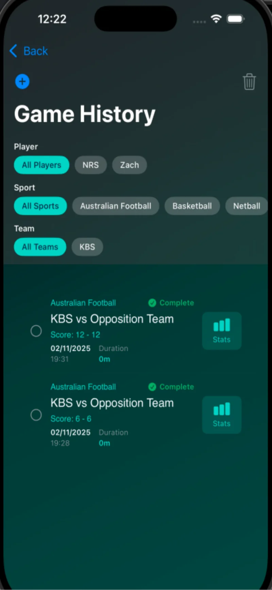
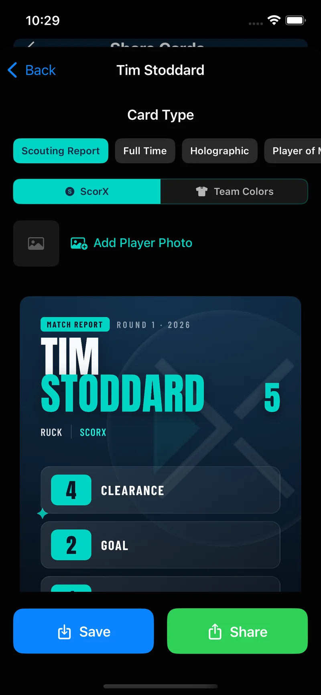
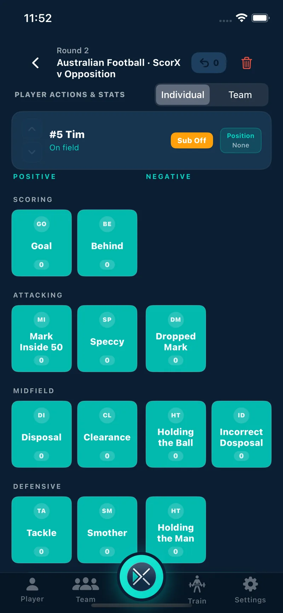
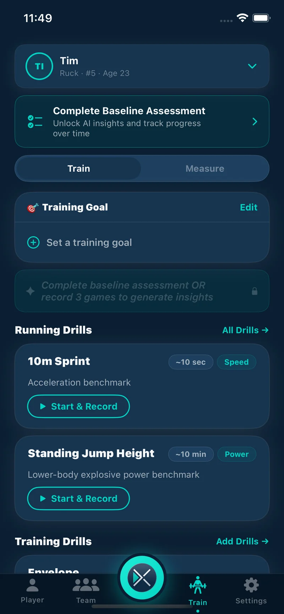
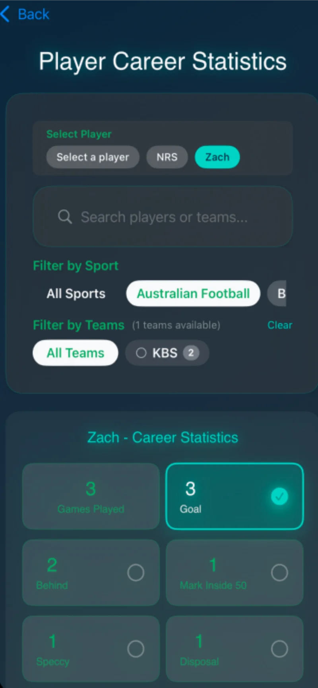
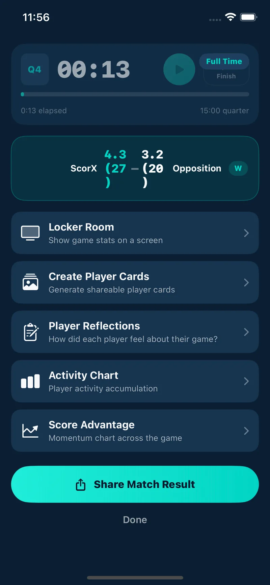

{% if post.category %}
{{ post.category }}
{% endif %}
{{ post.title }}
{{ post.excerpt | strip_html | truncatewords: 28 }}
Read more →ScorX keeps a young athlete's whole sporting record in one place — every game, every stat, every highlight worth sharing. Underneath the highlights it builds something quieter and more useful: an individual development plan drawn from real performance data, so goal setting stops being guesswork and improvement becomes something you can point at.
Every match recorded, every action timestamped, every good day saved. Free, with no game or player limits.
Free
Most young athletes finish a season with a rough memory of it. A big final, one blinder of a game, and a blur in between. ScorX keeps the actual record — so five years later there is still a page for the day everything clicked.

One style free | Full library: Premium
Player Cards turn a good game into something shareable — the athlete's photo, their numbers, their day. This is the part kids actually ask for, and it is the reason the recording habit sticks long enough for the development side to matter.

A personal development plan for a junior athlete is not a document. It is four honest answers, refreshed every few weeks.
Goals set from memory drift toward whatever happened last Saturday. Recording each game gives the plan a baseline — what this athlete does, how often, and when in a game they do it.
Sprint, jump, endurance and strength numbers separate a skill problem from a physical one. Without them, every development plan defaults to "more training" and nobody knows what changed.
Two focus areas, tied to actions the athlete controls and that get recorded every game. Not selection, not the scoreboard — things they can go and do this week.
After about five games or a re-test, check the trend. Improving, flat, or going the wrong way? Then set the next focus. That loop is the whole plan.
New to this? Read when a young athlete should start a development plan and five development goals to set at the start of a season.
Before any goal is worth setting, you need an honest starting point — on the field and off it.
Free
Totals tell you how much. The timeline tells you when — and that is usually where the development conversation actually is.

Free — record & track
The same measurements academies take on a testing day, kept privately by the athlete instead of on someone else's clipboard.
More on this: why performance academies run testing days.
ScorX Premium
A 40m time on its own is a number. Against age and sex benchmarks it becomes a decision about where the next block of work should go.
Development guidance built from this athlete's data — not a generic drill list off the internet.
ScorX Premium
The Train section reads game stats, the athlete's own post-game reflections and their athleticism metrics, then says what to work on and why — in language a 13-year-old can act on.

ScorX Premium
A development plan rewritten after every bad game is not a plan. ScorX deliberately waits for enough evidence before changing direction.
Coaches get the team-level version of this in the free post-game triage dashboard.

The payoff for the planning is being able to show it, to a coach, a selector, or the kid who did the work.
Free
Every sport, every season, every club, in one visual run. Junior athletes change teams, codes and coaches constantly — the timeline is the one thing that follows them through all of it.
ScorX Premium
At the end of a season, the numbers get turned back into a story — what improved, what to chase next, and how this year compared to last.

Recording, celebrating and tracking are free forever. Premium adds the analysis layer.
| For athletes | Free | Premium |
|---|---|---|
| Game history & per-game stats | ✓ | ✓ |
| Activity timeline | ✓ | ✓ |
| Ten athleticism metrics & trends | ✓ | ✓ |
| Career Timeline | ✓ | ✓ |
| Player Cards | 1 style | Full library |
| Age & sex benchmarking | — | ✓ |
| Train section & AI development plan | — | ✓ |
| Season Narratives & PDF export | — | ✓ |
Premium is A$4.99/month or A$49.99/year with a 30-day free trial and no credit card required. Full detail on the pricing page.
An individual development plan is a short, written answer to three questions: where the athlete is now, what one or two things they are working on next, and how they will know it worked. For a junior athlete it does not need to be formal. In ScorX the plan is built from recorded game stats, athleticism measurements and the player's own post-game reflections, so the goals point at something real rather than a guess.
Pick goals tied to actions the athlete controls and that get recorded every game — disposals under pressure, defensive efforts, shot accuracy, time on the ball — rather than goals tied to the scoreboard or selection. ScorX records those actions game by game, so a goal like "more contested possessions in the second half" can be checked against the activity timeline instead of debated in the car on the way home.
The Train section (ScorX Premium) reads game statistics, the player's own reflections and their athleticism metrics, then names a primary and secondary focus area with the evidence behind it. It suggests a training approach, a realistic session structure, and the success indicators that show the work is paying off. It updates after 30 days or five new games, so a single bad game never rewrites the plan.
Ten physical development metrics: 10m sprint, 40m sprint, standing jump, 2km run, 5km run, max push-ups, max pull-ups, bench press, squat and deadlift. Recording and re-testing is free, and every metric carries a trend indicator so improvement is visible. Age and sex benchmarking, which shows where an athlete sits against peers, is part of ScorX Premium.
Player Cards are generated from an athlete's game stats and profile photo, ready to share to Instagram, WhatsApp or the family group chat. One standard card style is free for everyone. ScorX Premium unlocks the full library — classic, modern, sport-specific and sticker formats — plus custom colour themes and a full card configurator.
Stats and highlights are there from the first game. Meaningful development trends usually need about five games or a re-test of athleticism metrics, which is roughly a month of a normal junior season. That is why ScorX refreshes the training focus after 30 days or five games rather than after every match.
No. An athlete or parent can record games, measure athleticism and build a development plan on their own. If the coach also uses ScorX, match invitations let stat recording be shared during games, and the athlete's history still belongs to the athlete across clubs, teams and seasons.
Complete game history with per-game stat breakdowns and activity timelines, all ten athleticism metrics with trend indicators, the Career Timeline, and one standard Player Card style — with no game, player or team limits. ScorX Premium (A$4.99/month or A$49.99/year) adds the Train section, benchmarking, the full card library, Season Narratives and PDF export.
Download free, record your first game, and see the stats before you decide anything else. Premium is there when you want the benchmarking and the development plan.
Download FreeGuides and performance insights to help young athletes train with purpose and measure real progress.
{{ post.excerpt | strip_html | truncatewords: 28 }}
Read more →